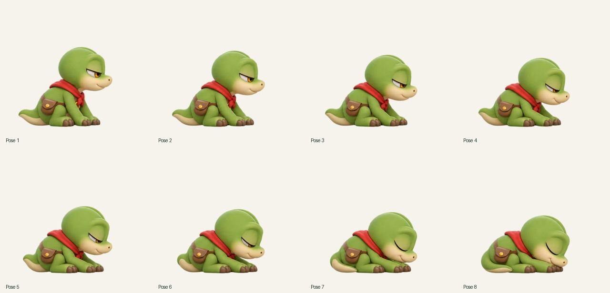

Studio history · Previous motion study · Approved baselineV0.7.4 · FOCUSED LOWERING STUDY · NOT APPROVED
Settling into sleep.
Eight closely spaced whole-body drawings test the difficult lowering transition. This short study isolates elbow bend, chest lowering and head support. Motion is still stepped; tail and accessory consistency need refinement.
Loading…
New pose contact sheet

Approved visual reference

Rendered study video · Transparent sprite atlas · Manifest
Hands align by an estimated outer-hand landmark. This does not prove physical contact. Tail curling is uneven, and head and bag shapes still drift. This is a transition experiment, not the completed rest cycle. Approved animation baseline remains v0.5.1.